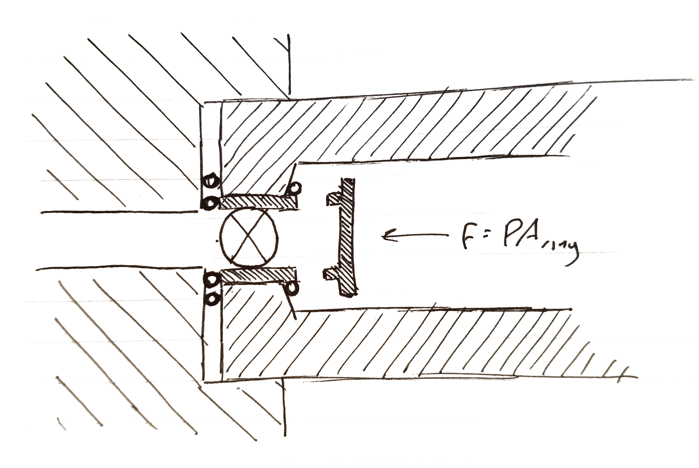

I've been building airsoft guns for a while. When it comes to lobbing a small spherical projectile across
a field there are a variety of ways to go about it. Unfortunately, many of these methods involve
external energy sources - that is, the projectile and the power source separate. This setup works great
for larger guns with high rates of fire. However, for smaller weapons and long-range rifles
these setups begin to be cumbersome as DIY external power sources tend to be large and heavy, limiting the
mobility and rendering them far less effective.
The solution, of course, is to emulate modern gunpowder-based weapons and combine the power source (propellant) and
the projectile into the same convinient package - a cartridge. Unfortunately, this concept is a bit harder to
implement for airsoft weapons because it is impractical to use gunpowder. Instead, most propellants widely
available for DIY purposes are gas based, either combustible or compressed. It is far harder to contain a gas
in a small, cheap container than to contain a solid medium like gunpowder. I've been searching for a solution
to this problem for a while, but most solutions I've come up with have never quite been successful. Types I and
II were ineffective and Type III was too costly to produce in reasonable quantities.
At long last, however, I think I've found a solution.
. . . I'll write this later. By the way, this all needs to be in past tense...
I've rather slowly learned that it's best not to jump into an idea without first proofing it. As such, I've
divided up the plan into several stages.
Before I design a gun or even fabricate a test catridge I need to work out one very critical parameter: the internal pressure of the cartridge. I may have to significantly alter the design of the cartridge if it turns out I need 1000 psi achieve an acceptable projectile performance.
To determine this pressure should be an easy task. I'll only need to machine 1/8 NPT female threads into some steel tube which will act as my barrel. I'll use